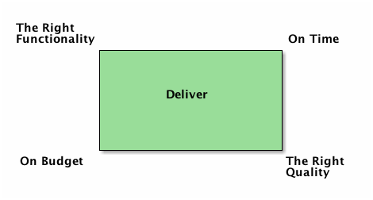
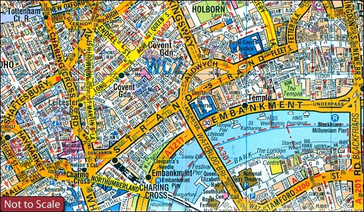
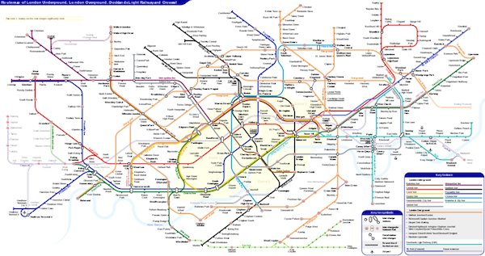
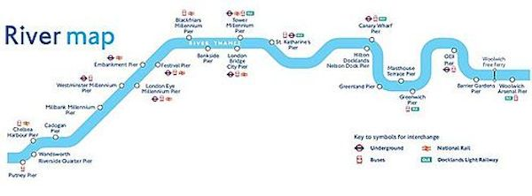
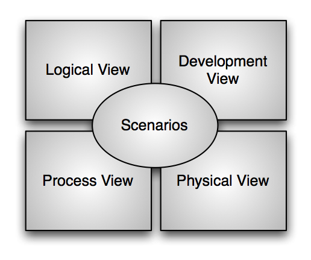
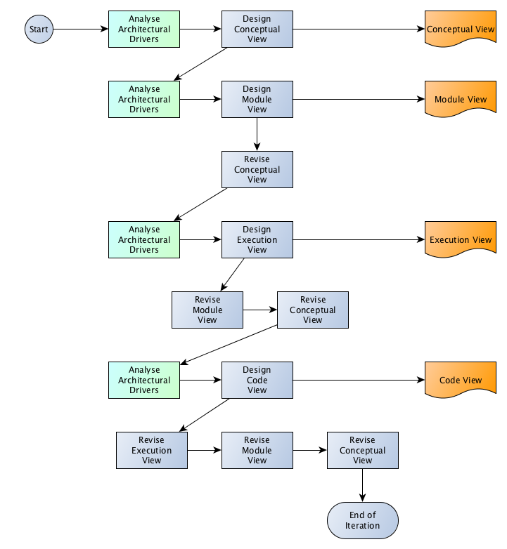
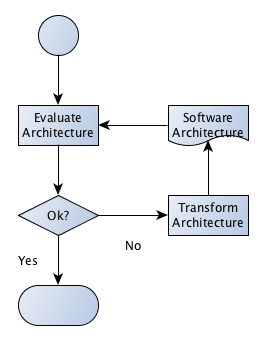

Introduction to Software Architectures
Table of Contents
1 About This Sprint
This sprint reviews how to describe a non-trivial software system in the form of a software architecture.
For more information on this topic, see e.g. the course PA1453 Software Architecture and Quality.
2 User Stories covered in this Sprint
- As a software designer I want to be able to divide my design into manageable chunks so that I can get a better overview.
- As a software designer I want to address the quality requirements of the software system early on so that they are not missed.
- As a software designer I want to address the quality requirements of the software system in the most appropriate way to facilitate the rest of the development project.
3 Introduction
When developing software there are a number of challenges to keep in mind. For example, the project manager want to reduce the development costs, your marketing department will want to reduce time-to market, considering that your application is going to spend 90% of its lifespan in maintenance, your company will want to decrease the maintenance costs, and your product managers want to increase system quality. We can summarise these needs in what is known as the Iron Triangle. Ignoring Euclidean geometry, this can be summarised as:

Figure 1: The Iron Triangle of Software Development
In order to balance these requests (and many more) you, as software developers, take decisions (Note how only one of the challenges appear to be about software. I won’t say any more about this for now, but I encourage you to think about how you would address the other challenges in your software). Software architecting is about identifying which business and technical decisions are necessary, and finding solutions that satisfy all stakeholders.
The software architecture is a tool for understanding which decisions are necessary, for planning how to instantiate these decisions in your software, and for communicating your decisions to the rest of the development team. You also use them to predict quality, and identify opportunities for reuse.
Going back to the iron triangle. Jan Bosch once said “Functionality is easy.” Anyone can implement functionality. It’s just a matter of hacking away until you have the right functionality. It is the other three corners that require planning, and where a software architecture may help. Let’s review each of the corners:
- On Time
- What features are most important to deliver first? How much time do you have? How can you structure the system so that you can develop features in parallel?
- On Budget
- What resources do you have available? How do you structure the software to make best use of the available expertise? What can you buy? What must you build?
- On Quality
- The obvious bit here is how you structure the software so that you can test it properly, but there is more to say here. The software architecture defines a potential to achieve certain quality attributes (for example, one structure may be good for reliability, another for modifiability, and a third for throughput). We may, in fact, define “on time” and “on budget” to also be specific quality requirements, that should be balanced alongside with performance, maintainability, reliability etc. ISO9126 (and it’s successor ISO 25010) goes one step further and also includes functionality as one quality attribute among the rest.
3.1 Architecture as Decisions
The first thing of a software architecture is thus that it consists of conscious decisions on how to address different concerns from different stakeholders. This includes decisions on concerns where you do not have the right competence available in-house, decisions on concerns where you need to deliver parts of the system in a certain order, decisions on concerns about how to achieve different quality requirements, and decisions on how to balance all these different concerns such that you focus on the most important concerns (side note: how do you prioritise your concerns?).
I will even go so far as to say that the decisions are the software architecture. The rest is just instantiations of these decisions. The instantiation is important, since this brings together all of your decisions into one coherent system that you are able to communicate to others, and to evaluate to ensure that you actually satisfy the right balance of quality requirements.
A more traditional definition is provided by the Software Engineering Institute (The definition below is from their book Software Architecture in Practice (Bass et al. 2012)):
The software architecture of a program or computing system is the structure or structures of the system, which comprise software elements, the externally visible properties of those elements, and the relationships among them.
3.2 Architecture Views
If you’ve payed attention to the other sprints in this course, it should not come as a surprise to you that the software archtiecture is documented in a number of different ways, depending on what you are focusing on. Consider the maps below. All three represent London, but from different perspectives.
  
(There are also Other maps of London that are equally valid representations of the city. For example, there are sewage maps, electricity maps, gas maps, etc.)
If you are sightseeing, you might use the river map and take a boat. If you are walking or driving, the A-Z map is probably your best friend. If you just want to get from point A to point B, you use the tube map.
In the same way, you express your software architecture using different types of “maps” depending on what you intend to do. Philippe Kruchten expressed this in 1994 as the “4+1 view of architecture”:

This has influenced many design methodologies, including UML. The current best practice is to define a set of views (possibly from a suggested superset of potential views) that are relevant for your system. I am a bit old-fasioned, so I usually stick with a subset of Hofmeister et al. (2000)’s views:
- A Conceptual View
- describing the system as a series of collaborating conceptual “logical” components.
- A Module View
- describing the system as implementable modules corresponding to UML packages.
- An Execution View
- studying the runtime behaviour of the modules.
- A Code View
- focusing on the development and build environment.
3.3 Working with the Views
In UML, the “Scenarios” that Kruchten describes are your use cases. In Hofmeister et al. (2000), it corresponds to your decisions. In Bass et al. (2012) it is your architectural drivers. You use these scenarios (use cases, decisions, architectural drivers, etc.) to define what you need to model on an architecture level, and then you focus on different engineering concerns of these “whats” in each of the viewpoints.
Engineering Concerns
- Conceptual View
- How does the system fulfill the requirements?
- How are COTS components to be integrated? How do they interact with the rest of the system?
- How is domain specific hardware and/or software incorporated into the system?
- How is functionality partitioned into product releases?
- How does the system incorporate portions of the prior generations of the product and how will it support future generations?
- How are product lines supported?
- How can the impact of changes in requirements or the domain be minimized?
- Module View
- How is the product mapped to the software platform?
- What system support/services does it use, and exactly where?
- How can testing be supported?
- How can dependencies between modules be minimised?
- How can reuse of modules and subsystems be maximised?
- What techniques can be used to insulate the product from changes in COTS software, in the software platform, or changes to standards?
- Execution View
- How does the system meet its performance, recovery and reconfiguration requirements?
- How can one balance resource usage (for example, load balancing)?
- How can one achieve the necessary concurrency, replication and distribution without adding too much complexity to the control algorithms?
- How can the impact of changes in the runtime platform be minimised?
- Code View
- How can the time and effort for product upgrades be reduced?
- How should product versions and releases be managed?
- How can build time be reduced?
- What tools are needed to support the development environment?
- How are integration and testing supported?
Once you have the scenarios (decisions) for your first iteration ready, you basically work your way through the different views. There is an implicit order between them, because you need a conceptual overview before you can start defining modules, and you need the modules before you can start allocating these to your runtime platform. You also need the modules and the runtime overview before you start planning how to build, test, and integrate your system. However, it is also important to know that the decisions you take in the process of creating one view will impact the views you have already done, so you need to go back and revise in a highly iterative process.

3.4 Architecture Evaluation
You set out in your quest for architecture design with a well defined set of intentions; your (and your stakeholders) primary concerns. You have balanced these intentions against each other and the importance of each stakeholder, you have taken decisions on how to realise a system that satisfies these intentions, and you have instantiated your decisions in a number of different views of your system.
As a good engineer, you should not be satisfied here. The software architecture is a relatively cheap artefact to produce, and it has a considerable impact on your quality requirements. Your architecture is also expressed in several different views, and you need to integrate these views into a whole. Lindvall et al. (2003) distinguishes between Early Architecture Evaluation and Late Architecture Evaluation:
Early Architecture Evaluation
- Do we meet the quality requirements on the system?
- Do all stakeholders share a common understanding of the system?
- Are all requirements accounted for?
- Are there any weak spots in ther architecture?
- Can the system (and/or the architecture) be improved?
- Does the development team have all the necessary resources?
- Should we let this project continue?
Late Architecture Evaluation
- Hard metrics.
- How did we do? What needs to be improved for the next release?
There is a range of different evaluation methodologies available, from ad-hoc based “looking at the architecture and trying to find challenges based on past experiences and logical reasoning”, via more structured versions of this, up to simulation-based and mathematical models. The most commonly used is what is called scenario-based, which is a way to structure your experiences and focus your analysis into one scenario at a time.
Once you have evaluated your architecture, you need to decide whether you satisfy your quality requirements (and your other engineering concerns) or not. If you do, then you are done and can continue building your system. If not, you transform the architecture. This means that you change the architecture in one or several ways in order to improve those qualities that were lacking in your evaluation. Then you re-evaluate to see whether your transformations meet their goal and that they did not negatively effect any other of your qualities.

Figure 4: The Architecture Evaluation Cycle
A Good Software Architecture
- Is based on conscious decisions
- Is evaluated to ensure that it satisfies the specific goals for the system
- Pays attention to current and future quality attributes
- Is well documented, with traceability to the architecture decisions
- Features well defined modules(components), with well defined interfaces and well defined responsibilities
- Is restricted to a small set of interaction patterns that are consistently used
3.5 Architecture Tactics
Bass et al. introduces one more crucial aid for designing your architecture, namely Architecture Tactics. When you have your architectural drivers and need to decide how to actually adress these in your software architecture, architectural tactics suggest solutions on an architectural level for different quality requirements. The tactics are described on a high level, so you need to work with them quite extensively in order to actually fit them into your system.
For example, if performance is a concern for you, Bass et al. suggest that you can focus on managing the resource demand (e.g. by reducing overhead, rate limit the incoming data, or be more efficient in your computations), you may manage the resources smarter (e.g. by introducing concurency), or you may divide the work better (e.g. with a different scheduling policy). Of course, you may decide to use several of these tactics at once. Which tactic to use depends on your system and your data.
I suggest that you have a look in the Software Architecture in Practice book by Bass et al. and get an overview of the available tactics. These are good engineering principles that help you achieve your quality requirements in a more repeatable way.
3.6 Summary
To summarise, software architecture design is about:
- Identifying what needs to be decided in order to support the required functionality with the right level of quality.
- Deciding on solutions (for example with the help of tactics) that will address the required qualities.
- Instantiating those solutions in different viewpoints of the system.
- Evaluating whether your instantiation sufficiently address the decisions, and whether you thus sufficiently satisfy your quality requirements.
- Iterating until you are satisfied.
4 Learning Material
4.1 Book Chapters
- C. Larman, Applying UML and Patterns, 3rd Edition, Chapters:
- Architecture Analysis
- Logical Architecture Refinement
- UML Deployment and Component Diagrams
- Documenting Architecture: UML & the N+1 View Model
4.2 Screencasts
4.3 Books and Articles
- L. Bass, P. Clements, and R. Kazman. Software Architecture in Practice, Third Edition. Addison-Wesley Publishing Co., Reading MA, 2012.
- C. Hofmeister, R. Nord, and D. Soni. Applied Software Architecture. Addison-Wesley, Reading MA, 2000.
- R. Kazman, L. Bass, M. Webb, and G. Abowd. SAAM: A method for analyzing the properties of software architectures. In Proceedings of the 16th international conference on Software engineering, pages 81–90. IEEE Computer Society Press, 1994.
- P.B. Kruchten, “The 4+ 1 view model of architecture.” IEEE software 12.6 (1995): 42-50.
- M. Lindvall, R. T. Tvedt, and P. Costa. An empirically-based process for software architecture evaluation. Empirical Software Engineering, 8:83–108, 2003.
- M. Svahnberg and F. Mårtensson. Six years of evaluating software architectures in student projects. Journal of Systems & Software, 80(11):1893–1901, 2007.
5 Experiential Learning
5.1 Sprint Test Plan
Go through the user stories for this sprint and make sure you have a clear understanding of how to solve each of them.
Revisit and update your risks and contingencies section.
Add and/or revise the following items to your glossary:
- Software Architecture
- The 4+1 Views of Architecture
- Architecture Viewpoints
- Conceptual View
- Module View
- Execution View
- Code View
- Quality Aspects
- Quality Attribute
- Quality Requirement
- Architecture Evaluation
- Early Architecture Evaluation
- Late Architecture Evaluation
- SAAM/ATAM
- Architecture Tactics
Make sure you understand what each item is, the notation for them, and how to use them either in isolation or together with the other concepts.
5.2 Update Course Backlog
Are there any common architecture styles? What are their qualities? How can you deal with (new) functionality that uses several of the components in the system (for example, a new feature may require a new UI dialogue, new business logic on several levels, new database connections, new tables in the database)?
Are there any other questions that you want answered? Add them, along with a brief strategy for how to find an answer.
6 Sprint Acceptance Tests
You are done with this sprint when:
- You understand the relationship between quality and software architecture.
- You understand how different views of a software system interact to create a richer picture of the entire system.
- You have an overview of different means available to evaluate your software architecture.
- You understand how architecture tactics can be used to drive your quality-focused architecture design work forward.
- You have considered which quality attributes are relevant for your system.
You may also have
- Updated your Sprint Test Plan
- Updated your Course Backlog